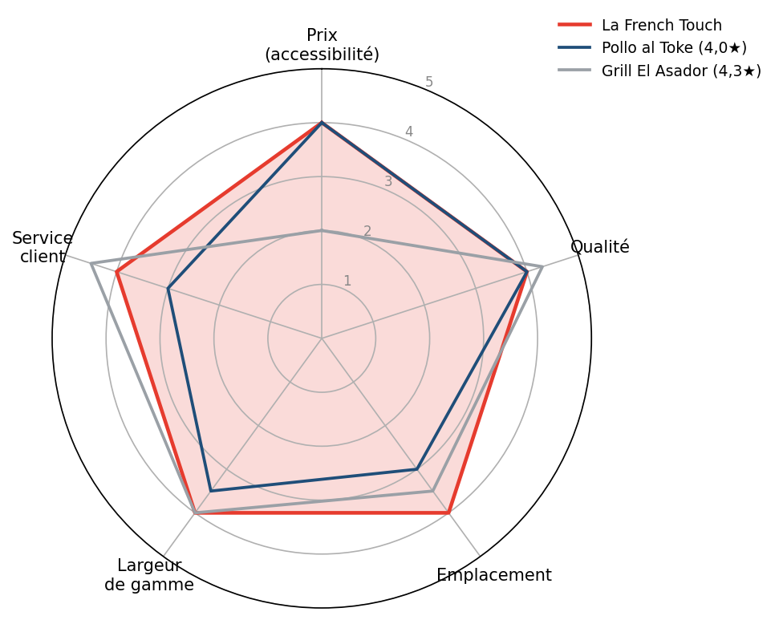
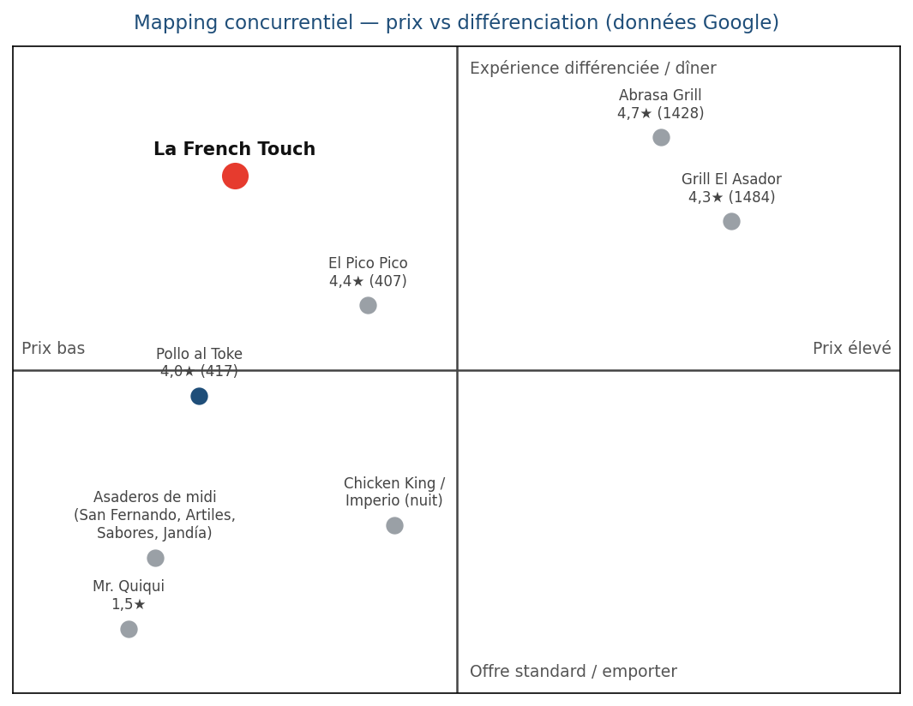
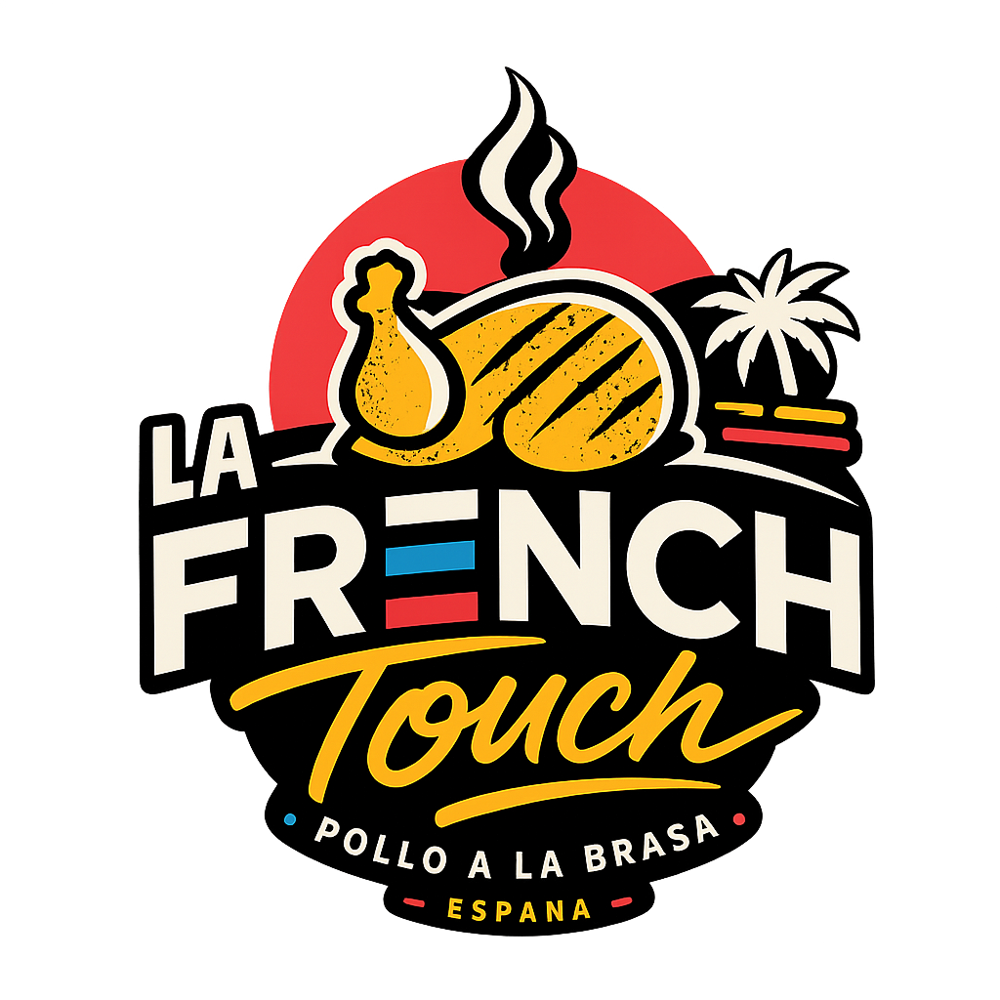

DESCRIPTION DU PROJET
• Expression de la vision :
Vous devez répondre aux questions suivantes : Quoi ? Où ? À qui ? Comment ? Il est très important de clairement identifier les contours de votre projet (que souhaitez-vous proposer ?) et la cible à laquelle vous souhaitez vous adresser. Ces éléments orienteront les travaux à réaliser dans le cadre de cette étude de marché (recherches documentaires, enquête terrain…). |
|
Quoi ? La French Touch est une rôtisserie-restaurant de poulet rôti à la braise (pollo a la brasa) revisité avec une « touche française » : recettes et sauces françaises, accompagnements et desserts français (gratin, tartes…), portés par une image de marque française assumée.
Où ? À Maspalomas (San Bartolomé de Tirajana, Gran Canaria), en façade de la zone balnéaire touristique — l'un des cœurs touristiques les plus fréquentés d'Espagne.
À qui ? Un mix équilibré de touristes internationaux (britanniques, allemands, nordiques, néerlandais, français en forte hausse) et de résidents locaux, en quête d'une restauration conviviale, qualitative et accessible.
Comment ? Un double canal : service en salle (30 à 60 couverts) ET vente à emporter / livraison via les plateformes (Glovo, Just Eat, Uber Eats), à un ticket moyen accessible (moins de 12 € par personne).
• Problème de marché :
Votre projet doit répondre à un problème de marché. Exprimez le manque, le « caillou dans la chaussure », que votre projet va permettre de résoudre. Cela peut aussi être une amélioration de l'existant.
Maspalomas concentre une offre dense d'asaderos (rôtisseries) et de restauration touristique, mais largement indifférenciée : asaderos locaux classiques, enseignes latino-américaines, combinés pizza + poulet. Le visiteur comme le résident manquent d'une offre de poulet rôti à la fois accessible, qualitative et porteuse d'une identité forte.
La French Touch comble ce manque avec une signature française reconnaissable (recettes, sauces, accompagnements, marque) sur un produit populaire et universel — le poulet rôti — combinée à une distribution moderne (salle + livraison) qui capte aussi bien le flux piéton balnéaire que la demande à domicile et en location de vacances.
ÉTUDE DOCUMENTAIRE
• Articles de presse :
Il existe certainement des articles de presse en relation avec l'activité que vous projetez de créer. |
|
[Source : Cabildo de Gran Canaria / ISTAC-Frontur, bilan 2025]
Gran Canaria a clôturé 2025 sur un record de 4 856 483 touristes (+3 %), porté par une diversification des marchés — dont une forte progression du marché français (+43 % en décembre). Un contexte favorable pour un concept à identité française.
[Source : maspalomas24h, 2025]
Maspalomas (San Bartolomé de Tirajana) est la 3ᵉ destination d'Espagne en nombre de nuitées, derrière Madrid et Barcelone — un flux de clientèle massif et continu pour la restauration locale.
• Études sectorielles et de tendances :
• Informations pointues, thèses, brevets (si besoin) :
Des sociétés spécialisées réalisent des études complètes sur la plupart des secteurs. Si votre projet comporte une innovation, il convient de s'assurer de son bien-fondé, sur le plan technique comme sur celui de la propriété intellectuelle.
- Le tourisme représente plus de 35 % du PIB des Canaries et plus de 400 000 emplois : la restauration est un secteur porteur et structurant.
- Durée moyenne de séjour ~7 nuits et plus de 72 hôtels dans la commune : une clientèle renouvelée en permanence.
- Tendances de consommation : essor de la livraison (Glovo, Just Eat, Uber Eats), poids des avis en ligne (Google, TripAdvisor), recherche de « comfort food » de qualité.
Le projet ne comporte pas d'innovation brevetable : l'actif immatériel à protéger est la MARQUE « La French Touch » (dépôt de marque recommandé) et le savoir-faire des recettes et sauces signature.
• Données concernant la zone de chalandise et la cible :
Si votre offre s'adresse à une cible locale, il est important de connaître précisément votre zone de chalandise (taille, population, profils) ainsi que les habitudes d'achat de votre cible (quand, pourquoi, comment).
[Source : Cabildo de Gran Canaria / ISTAC-Frontur, 2025]
Marché émetteur | Touristes 2025 (Gran Canaria) | Tendance |
Royaume-Uni | 1 072 132 | +1,5 % |
Allemagne | 918 818 | +1,8 % |
Pays nordiques | 838 027 | -2,8 % |
Espagne (national) | 565 484 | +2,8 % |
Pays-Bas | 333 571 | +7,1 % |
France | 165 348 | +0,4 % (+43 % en déc.) |
Italie | 162 736 | +17,3 % |
À cette clientèle touristique s'ajoutent les ~54 000 résidents de la commune et la main-d'œuvre saisonnière. La zone de chalandise primaire (front de mer) bénéficie d'un flux piéton dense, peu marqué par la saisonnalité grâce au climat doux toute l'année.
ÉTUDE CONCURRENTIELLE
• Vue « radar des concurrents »
Il s'agit d'une représentation des concurrents, des plus directs aux plus indirects. Vous pouvez comparer le nombre de concurrents et les critères de votre choix. |
|

La French Touch comparée à son rival direct (Pollo al Toke, 4,0★) et au benchmark du dîner (Grill El Asador, 4,3★).
• Tableau d'analyse concurrentielle :
Précisez ici : 1) Identité des concurrents · 2) Analyse des concurrents · 3) Forces et faiblesses · 4) Leurs tarifs · 5) Leur renommée · 6) Leur implantation · 7) Leur stratégie de communication.
La French Touch | Pollo al Toke | Asadero San Fernando | Grill El Asador | |
Service en salle (soir) | ✓ | ✓ | ✗ | ✓ |
Ouvert le soir / dîner | ✓ | ✓ | ✗ | ✓ |
Vente à emporter | ✓ | ✓ | ✓ | ✗ |
Livraison plateformes | ✓ | ✓ | ✗ | ✗ |
Prix accessible (<12 €) | ✓ | ✓ | ✓ | ✗ |
Identité française unique | ✓ | ✗ | ✗ | ✗ |
Spécialiste du poulet rôti | ✓ | ✓ | ✓ | ✗ |
Lecture : La French Touch est la seule à cumuler salle + soir + livraison + prix accessible + identité française. Les asaderos « purs » (San Fernando, Artiles…) ferment vers 16 h : le créneau du dîner en poulet rôti est largement libre.
Panorama Google (notes & avis, juin 2026)
Établissement | Note (avis) | Format / horaires |
Pollo Al Toke | 4,0 (417) | Latino, le soir, livraison 3 plateformes — rival direct n°1 |
El Pico Pico | 4,4 (407) | Poulet rôti + italien, midi et soir |
Asadero San Fernando | 4,2 (127) | Emporter, midi seulement (fermé lun-mar) |
Chicken King | 4,0 (105) | Yumbo, ouvert la nuit |
Freiduría Artiles | 3,9 (104) | Emporter, midi seulement |
Sabores (asador de pollos) | 4,6 (38) | Emporter, midi |
Imperio del Gusto | 4,8 (33) | Poulet maison + kebab, la nuit |
Asadero Jandía | 4,1 (27) | Emporter, menu ~8,95 € |
Mr. Quiqui | 1,5 (19) | Faible (négligeable) |
Grill El Asador (indirect) | 4,3 (1 484) | Asador argentin — benchmark dîner |
Abrasa Grill (indirect) | 4,7 (1 428) | Grill premium (San Fernando) — benchmark dîner |
I) Identité des concurrents
Concurrents directs (poulet rôti / asaderos) recensés sur Google dans la zone : Pollo al Toke, El Pico Pico, Asadero San Fernando, Chicken King, Freiduría Artiles, Sabores, Imperio del Gusto, Asadero Jandía, Mr. Quiqui — soit au moins neuf enseignes. Concurrents indirects (le dîner) : les grills Grill El Asador et Abrasa Grill, très dominants en volume d'avis. Distribution concurrente : Glovo, Just Eat, Uber Eats et le service local GC Express (Food Express).
II) Analyse des concurrents
Le rival direct n°1 est Pollo al Toke (4,0★, 417 avis) : ouvert le soir, présent sur les trois plateformes, site web propre. Point clé : les asaderos « purs » (San Fernando 4,2 ; Artiles 3,9 ; Sabores 4,6 ; Jandía 4,1) sont surtout du MIDI et de l'emporter, et ferment vers 16 h — le dîner en poulet rôti est donc peu couvert (seuls Pollo al Toke, Chicken King et Imperio tiennent le soir/la nuit). Les vrais benchmarks du dîner sont les grills : Grill El Asador (4,3★, 1 484 avis) et Abrasa Grill (4,7★, 1 428 avis) — mais ils sont chers et ne font pas de poulet rôti ni de livraison.
III) Forces et faiblesses de La French Touch
Forces : concept unique (poulet rôti + identité française) sur un créneau où personne ne se positionne ainsi, double canal salle + livraison, emplacement front de mer, ticket accessible, un vrai professionnel de la restauration dans l'équipe. Faiblesses : marque nouvelle sans notoriété, budget de lancement limité, processus à roder.
IV) Tarifs
La French Touch : menu < 12 €. Pollo al Toke : économique (niveau €). Asaderos de midi : économiques (ex. menu ~8,95 € chez Jandía). Grills (El Asador, Abrasa) : élevés (niveau €€). La French Touch reste accessible tout en se différenciant par l'expérience et l'identité.
V) Renommée (avis Google)
La French Touch : à créer. Côté poulet, Pollo al Toke (417 avis) et El Pico Pico (407) dominent en notoriété ; les autres asaderos ont des bases plus modestes (20 à 130 avis). Côté dîner, les grills écrasent tout : Grill El Asador (1 484 avis) et Abrasa Grill (1 428).
VI) Implantation
La French Touch : front de mer (Maspalomas). Pollo al Toke et Imperio : secteur Playa del Inglés / Kasbah. Asadero San Fernando, Artiles, Jandía, Abrasa : secteur San Fernando. Grill El Asador : Av. de Tirajana (Playa del Inglés). Chicken King : centre Yumbo.
VII) Stratégie de communication
La French Touch misera sur les réseaux sociaux (Instagram, TikTok, Facebook) et la présence sur les plateformes de livraison. Les concurrents les plus structurés ont déjà site web et Instagram (Pollo al Toke, Asadero Jandía, Grill El Asador), tandis que les petits asaderos reposent surtout sur le bouche-à-oreille. L'identité visuelle française forte est un atout de différenciation sur ces canaux.
• Mapping concurrentiel :
Exprimez visuellement votre différenciation sur un mapping à deux axes.

La French Touch occupe un quadrant peu disputé : prix accessible MAIS expérience différenciée. Le poulet rôti accessible est surtout du midi/emporter ; le dîner différencié est tenu par des grills chers. La French Touch vise l'intersection libre : poulet rôti identitaire, le soir, à prix doux.
ÉTUDE STRATÉGIQUE
• PESTEL
L'analyse PESTEL étudie les facteurs globaux pouvant influencer le projet (notamment le facteur légal, souvent oublié dans les projets de création). |
|
Politique :
Stabilité de l'Espagne et de l'UE ; Régime Économique et Fiscal (REF) spécifique aux Canaries ; fort soutien public au tourisme (budget de promotion municipal fortement augmenté) ; encadrement des licences d'hostelería et lutte contre l'activité illégale.
Économie :
Tourisme = plus de 35 % du PIB canarien et 400 000+ emplois ; clientèle à pouvoir d'achat élevé (RU, Allemagne, nordiques) ; ticket économique résilient en cas de ralentissement ; fiscalité favorable (IGIC restauration à 3 %, IS à 15 % pour les sociétés nouvelles).
Social :
4,85 M de touristes/an, séjour moyen ~7 nuits ; clientèle nord-européenne, nationale et francophone (en forte hausse) ; appétence pour la « comfort food » de qualité et les concepts identitaires ; tourisme familial et LGBTQ+ marqué à Playa del Inglés.
Technologie :
Forte pénétration des plateformes de livraison (Glovo, Just Eat, Uber Eats) et des réseaux sociaux ; poids décisif des avis en ligne (Google, TripAdvisor) ; encaissement et facturation électronique (VeriFactu).
Environnement :
Rareté de l'eau et gestion des déchets ; attentes de durabilité ; approvisionnement insulaire (coûts d'importation) ; climat doux toute l'année — atout pour une terrasse exploitable en continu et une faible saisonnalité.
Légal :
Licence d'ouverture et d'activité (licencia de apertura), normes sanitaires (Sanidad) et alimentaires UE, droit du travail espagnol, IGIC, autorisation municipale de terrasse.
• SWOT
L'analyse SWOT étudie ces facteurs au niveau de l'entreprise, du projet ou du produit.
Forces • Concept différenciant unique sur le créneau pollo a la brasa • Identité visuelle forte + salle photogénique (potentiel viral réseaux) • Emplacement front de mer à fort passage • Double canal : salle + emporter/livraison • Ticket accessible (<12 €) • Un vrai professionnel de la restauration dans l'équipe • Fiscalité canarienne favorable | Faiblesses • Marque nouvelle sans notoriété • Budget de lancement limité • Capital serré pour aménager un local nu • Équipe et processus à roder • Concurrence-prix des asaderos établis |
Opportunités • Marché touristique record et diversifié • Marché français en forte croissance • Aucune offre « French touch » sur ce créneau • Croissance de la livraison • Partenariats hôtels & locations de vacances • RIC pour réinvestir et alléger l'IS | Menaces • Forte densité concurrentielle en zone touristique • Saisonnalité et aléas du tourisme • Hausse des coûts (énergie, matières, loyers) • Évolutions réglementaires (licences) • Dépendance aux plateformes (commissions) |
ENQUÊTE TERRAIN
• Préparation du questionnaire
Il faut avant tout préparer les points que vous souhaitez investiguer, puis rédiger le questionnaire en fonction. |
|
Nous réalisons une enquête terrain pour évaluer l'attractivité d'un concept de poulet rôti « à la française » auprès des touristes et des résidents, et calibrer l'offre (prix, canaux, attentes).
- 1) Pendant votre séjour / votre semaine, à quelle fréquence mangez-vous au restaurant ou commandez-vous à emporter ?
- 2) Un concept de poulet rôti « à la française » (recettes, sauces, desserts) vous attirerait-il ? (échelle de 1 à 5)
- 3) Quel prix vous semble juste pour un menu poulet + accompagnement + boisson ?
- 4) Préférez-vous manger sur place, emporter, ou vous faire livrer ?
- 5) Quels canaux utilisez-vous pour choisir un restaurant (Google, TripAdvisor, réseaux sociaux, recommandation) ?
• Administration du questionnaire
Deux types d'enquêtes sont possibles : une enquête QUALITATIVE (entretiens approfondis pour analyser motivations et freins, sur des profils variés) et une enquête QUANTITATIVE (questionnaire pour mesurer comportements, préférences et satisfaction).
Administration : sur place (front de mer, hôtels et locations partenaires, QR code) et en ligne (groupes Facebook de touristes et d'expatriés, Instagram local), sur 2 à 4 semaines, en visant 150 à 300 réponses.
• Analyse des résultats
À l'aide d'outils d'analyse statistique et sémantique, faites ressortir les informations essentielles. Note : l'enquête n'ayant pas encore été administrée, les seuils ci-dessous sont des OBJECTIFS à valider, et non des résultats mesurés.
Attractivité du concept (objectif) :
- Taux d'intérêt élevé (note 4-5/5) visé : ≥ 60 % pour valider l'attractivité.
Prix d'acceptabilité (objectif) :
- Médiane attendue dans la fourchette 9-12 € (cohérent avec le positionnement économique).
Canaux & attentes (à mesurer) :
- Répartition salle / emporter / livraison, pour calibrer capacité et partenariats plateformes ; attentes produit (sauces, accompagnements, desserts).
CONSTRUCTION DU CA PRÉVISIONNEL ET DU PLAN D'ACTIONS COMMERCIALES
• Calcul des tailles du marché théorique et potentiel
Le marché théorique correspond à la demande maximale possible. Le marché potentiel se calcule à partir du marché théorique et des résultats de l'enquête terrain. |
|
Plan d'affaires pour La French Touch
1. Résumé
La French Touch est une rôtisserie-restaurant de poulet rôti à la braise « à la française », en salle et à emporter/livraison, implantée sur le front de mer de Maspalomas. Mission : offrir une expérience accessible, qualitative et identitaire aux touristes comme aux résidents.
2. Produits et services
2.1 Offre principale : poulet rôti à la braise, accompagnements et sauces signature françaises, desserts français. Menus midi/soir, formules famille, options à emporter.
2.2 Canaux : service en salle (30-60 couverts), vente à emporter au comptoir, et livraison via Glovo, Just Eat et Uber Eats.
3. Analyse du marché
3.1 Demande : flux touristique record (4,85 M sur l'île en 2025) et clientèle résidente locale ; forte habitude de restauration hors domicile en zone balnéaire.
3.3 Lacunes du marché : aucune offre de poulet rôti à identité française sur la zone — un positionnement vacant.
3.4 Concurrence : asaderos locaux et latino, combinés pizza+poulet, steakhouses premium ; différenciation possible par l'identité et l'expérience.
4. Clients cibles
4.1 Segments : touristes internationaux en séjour (RU, Allemagne, nordiques, Pays-Bas, France) et résidents locaux ; familles et groupes.
4.2 Démographie : large éventail d'âges ; séjour moyen ~7 nuits pour les touristes ; budget repas modéré.
4.3 Occasions : déjeuner/dîner sur place, repas à emporter le soir, livraison en location de vacances.
4.4 Besoins : manger bien, vite et à prix juste, avec une expérience différenciante et rassurante (marque, avis).
5. Stratégie de vente et de marketing
5.1 Canaux de distribution : salle + comptoir à emporter + plateformes de livraison (Glovo, Just Eat, Uber Eats, et le service local GC Express) ; partenariats avec hôtels, conciergeries et locations de vacances.
5.2 Actions de marketing et de vente — trois piliers prioritaires, sur lesquels La French Touch doit investir dès le lancement :
a) Une communication réseaux sociaux forte et offensive (avec budget dédié).
La restauration touristique se gagne aujourd'hui sur les réseaux. La référence est l'enseigne française Tasty Crousty : plus de 60 restaurants ouverts en moins de deux ans, propulsés non par la presse mais par la viralité TikTok et Instagram, avec un concept pensé dès l'origine pour les réseaux sociaux et une identité visuelle ultra-reconnaissable. La French Touch doit adopter la même logique : contenu vidéo régulier (poulet à la braise, dressage, coulisses), Reels/TikTok courts et rythmés, collaborations avec créateurs et influenceurs food locaux et touristiques, et campagnes payantes ciblées (Meta Ads, TikTok Ads) géolocalisées sur la zone et les nationalités présentes. Objectif : transformer chaque plat et chaque visite en contenu partageable. Ceci suppose un budget marketing réel, planifié (voir tableau ci-dessous), et non un simple compte Instagram tenu à temps perdu.
b) Une salle décorée aux couleurs de l'enseigne, photogénique et immersive.
Le décor n'est pas un détail : c'est un média. La salle doit incarner pleinement l'univers La French Touch — palette de la marque (noir, rouge, jaune, touches bleu-blanc-rouge), références à la braise et au clin d'œil français du logo, néons, fresques et au moins un « mur instagrammable » / coin photo identifiable. Une salle soignée et reconnaissable pousse les clients à photographier et partager spontanément : ce contenu utilisateur (UGC) est de la publicité gratuite et crédible, qui alimente en continu les réseaux et renforce l'image de marque. C'est aussi ce qui différencie La French Touch des asaderos fonctionnels de la zone, centrés sur l'emporter.
c) Un site web marquant et innovant, pensé pour la conversion.
À l'image du site de Tasty Crousty (tastycrousty.io), le site de La French Touch doit être moderne, immersif et mobile-first : identité visuelle forte cohérente avec la salle, présentation appétissante des plats, commande en ligne / click-and-collect, liens directs vers les plateformes de livraison, localisation et horaires, et intégration des réseaux sociaux. Un site marquant renforce la crédibilité, capte la recherche « restaurant Maspalomas / pollo a la brasa », et convertit le trafic social en commandes réelles.
Budget de communication — Année 1 (estimation)
Poste | Budget | Nature |
Identité visuelle + site web (innovant, commande en ligne) | 2 500 – 4 000 € | Investissement initial (one-shot) |
Décor de salle aux couleurs de la marque (mur photo, néons, signalétique) | 3 000 – 6 000 € | Investissement initial (one-shot) |
Photo / vidéo professionnelle (banque de contenu) | 1 000 – 1 500 € | Contenu réutilisable réseaux + site |
Publicité réseaux (Meta Ads + TikTok Ads) | 250 – 400 €/mois | ≈ 3 000 – 4 800 € / an |
Influenceurs & créateurs locaux/touristiques | 1 500 – 2 500 € | Invitations + micro-budgets |
Événement & offre d'ouverture | ≈ 1 500 € | Générer trafic et premiers avis |
Budget marketing récurrent visé | ≈ 6–8 % du CA | après l'investissement initial |
Montants indicatifs à ajuster selon les devis ; l'investissement initial (site + décor) est ponctuel, la publicité et les créateurs sont récurrents.
6. Plan financier
6.1 Revenus : objectif < 200 k€ la 1ʳᵉ année (voir calcul ci-dessous), avec une forte croissance attendue en année 2 une fois la notoriété installée.
6.2 Coûts : aménagement et décoration du local aux couleurs de la marque, loyer, matières premières, salaires, énergie, commissions des plateformes de livraison, et un budget marketing dédié (site web innovant + communication réseaux + publicité ; voir tableau au point 5.2). Ces postes « image » (décor, site, contenu) sont à considérer comme des investissements de croissance, pas comme des dépenses accessoires.
6.3 Rentabilité : à atteindre après la phase de montée en charge ; les avantages fiscaux canariens (IGIC 3 %, IS 15 %, RIC) soutiennent la rentabilité.
• Calcul du CA potentiel
Le CA annuel peut être estimé ainsi : marché potentiel × prix psychologique × fréquence d'achat. Identifiez ensuite vos actions commerciales en relation avec le CA espéré.
- Ticket moyen : ~11 € (poulet + accompagnement + boisson).
- Tickets/jour (salle + emporter + livraison) : ~45-50 en moyenne sur l'année (montée en charge).
- Jours d'ouverture : ~330.
→ CA cible 1ʳᵉ année ≈ 176 000 € (cohérent avec l'objectif < 200 k€).
• Réalisation du tableau de CA prévisionnel et du plan d'actions associé
Mois | CA estimé (€) | Commentaire |
Mois 1 | 8 000 | Ouverture, montée en charge |
Mois 2 | 11 000 | Rodage, premiers avis |
Mois 3 | 13 000 | Bouche-à-oreille |
Mois 4 | 14 000 | Livraison qui monte |
Mois 5 | 15 000 | Régime de croisière |
Mois 6 | 14 000 | |
Mois 7 | 16 000 | Affluence estivale |
Mois 8 | 18 000 | Pic d'août |
Mois 9 | 15 000 | |
Mois 10 | 18 000 | Pic touristique (octobre) |
Mois 11 | 17 000 | Saison hivernale nord-EU |
Mois 12 | 17 000 | Décembre / fêtes |
TOTAL An 1 | ≈ 176 000 € | Hypothèse prudente, < 200 k€ |
Action | Canal | Objectif |
Communication réseaux offensive | Instagram / TikTok / Reels | Notoriété + viralité (modèle Tasty Crousty) |
Publicité payante ciblée | Meta Ads / TikTok Ads | Toucher touristes & locaux par géociblage |
Influenceurs & créateurs | TikTok / Instagram | Crédibilité et portée (food + tourisme) |
Site web marquant & innovant | Web / mobile | Commande en ligne, image de marque, conversion |
Salle aux couleurs de la marque | Sur place | Décor photogénique → contenu client (UGC gratuit) |
Mise en ligne livraison | Glovo / Just Eat / Uber Eats / GC Express | Capter la demande à domicile et en location |
Cibler le créneau du dîner | Salle + plateformes | Occuper le soir, peu couvert par les asaderos de midi |
Référencement & avis | Google Business / TripAdvisor | Visibilité sur « restaurant Maspalomas » |
Événement & offre d'ouverture | Sur place + réseaux | Générer trafic et premiers avis |
Partenariats hébergeurs | Hôtels / conciergeries / locations | Flyers, QR codes, recommandations |
7. Conclusion
La French Touch est un projet prometteur : un concept différenciant (poulet rôti à identité française) sur un marché touristique record et diversifié, à un positionnement accessible, avec un double canal salle + livraison et une fiscalité canarienne favorable. Bien exécuté — emplacement, qualité constante, présence digitale — il dispose d'un solide potentiel de croissance dès la 2ᵉ année.

Étude indicative à des fins de cadrage. Données de fréquentation : sources publiques 2024-2025 (Cabildo de Gran Canaria / ISTAC). Les projections de CA sont des hypothèses à affiner avec les devis d'aménagement, le loyer réel et les premiers mois d'exploitation.